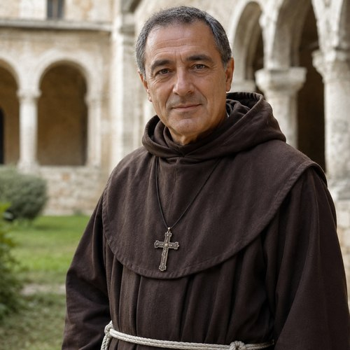
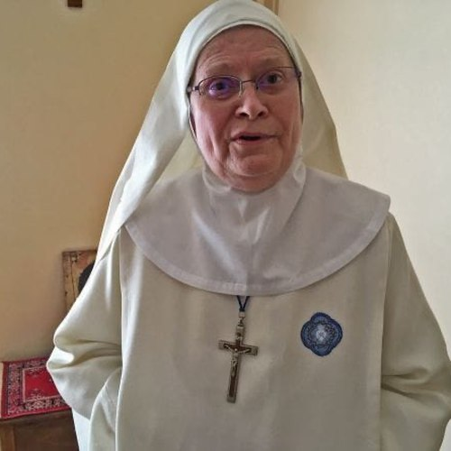
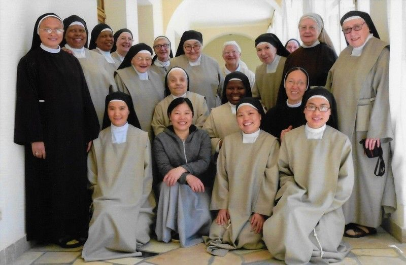
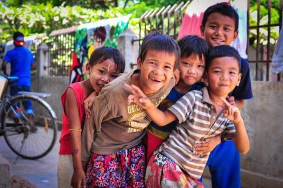
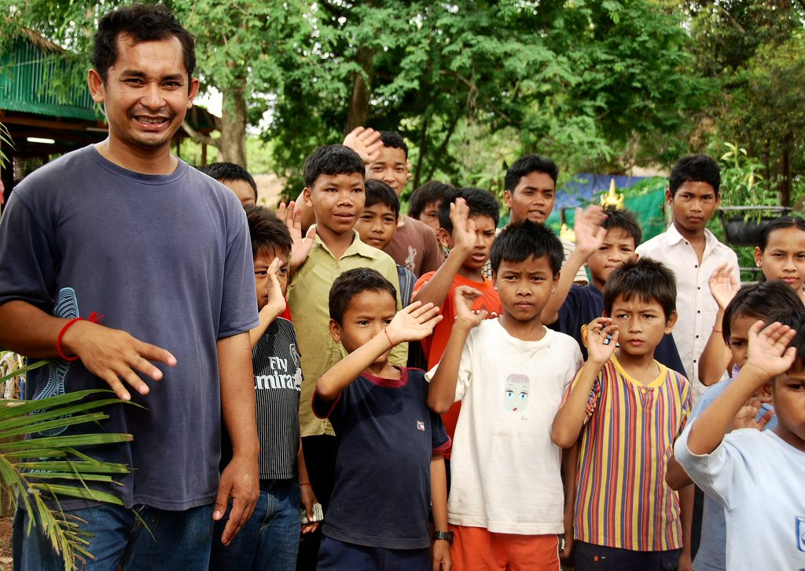
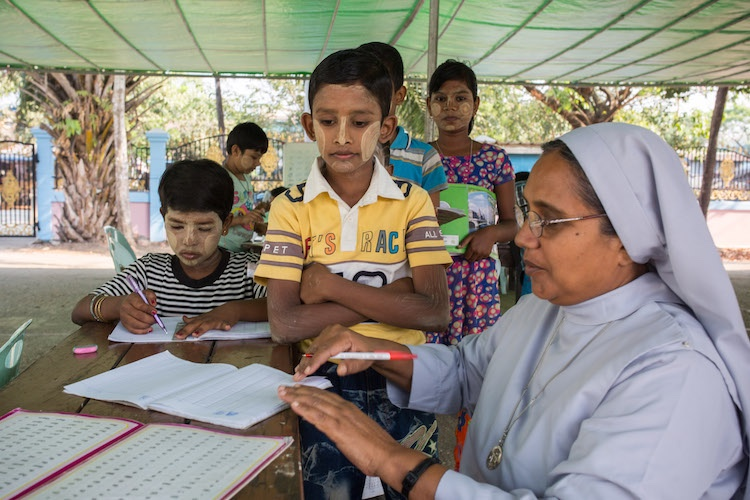
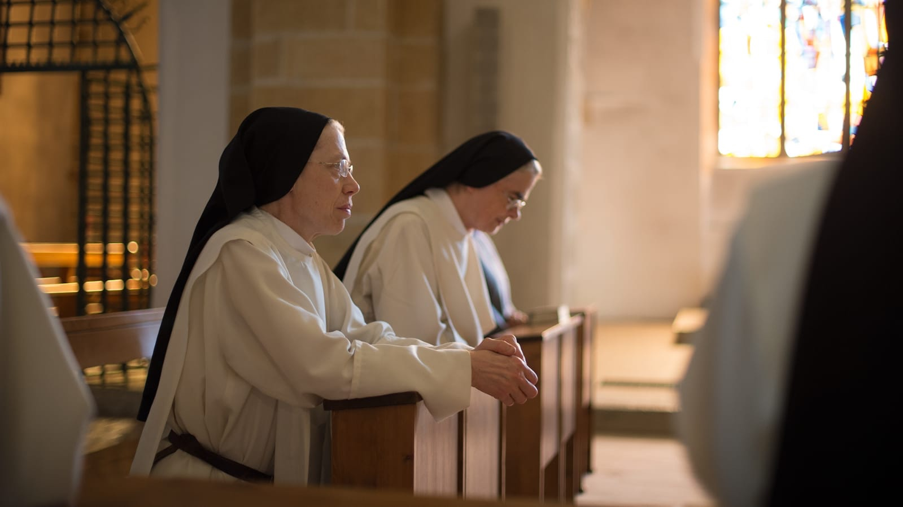
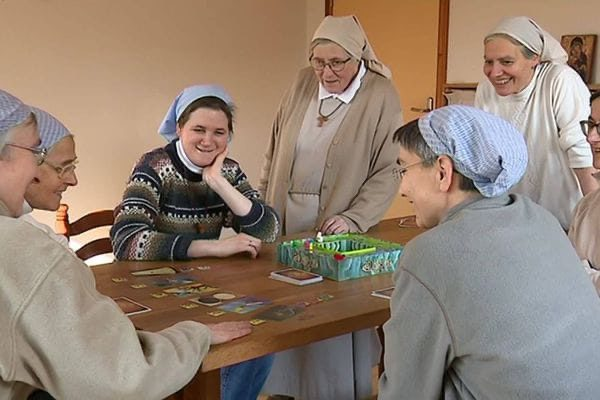

Fondazione Mano Amica · Italia — al fianco di chi ha più bisogno.
Un archivio in crescita: i volti dietro la fondazione, le persone che sosteniamo, e i momenti che raccontano il nostro percorso insieme ai donatori.
La nostra comunità

Guida spirituale

Co-fondatrice religiosa
Coordinatrice

Un momento della nostra comunità
Chi sosteniamo



Doni e iniziative

